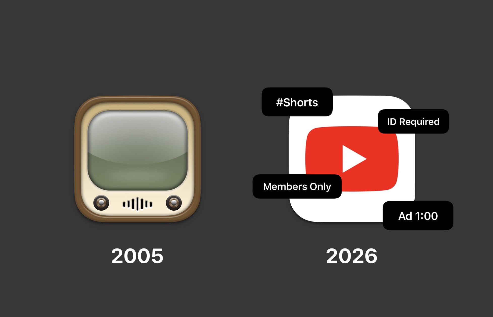

The Slow Downfall of YouTube
April 10th, 2026

Note: No artificial intelligence was used in the making of this blog post.
YouTube is probably the first and oldest social network I've ever used and still use to this day. To paint you a picture, I remember watching videos on an iPod Touch running iOS 6 that still had the old YouTube icon. Yeah, that long. But over the past couple of years (or maybe over a decade), the site isn't what it used to be anymore; it has changed so drastically that it has come to the point where it's almost unusable. With the rise of short-form content taking over and reducing attention spans, ads that used to only last 5 seconds (something I still remember) are now 45 seconds - 1 minute long, forcing users to upload their IDs. The list just goes on. In this blog post, I'd like to go over some of the major issue that's ruining YouTube, and how it will get much worse for users in the future. I wouldn't be writing this if things hadn't gotten this bad. Just a heads up, I won’t include old YouTube trends like the PewDiePie vs T-Series war, or YouTube Rewind (aside from their 2018 video).
Removal of the Dislike Button Count
On November 10th, 2021, almost three years after their yearly video series ‘YouTube Rewind 2018: Everyone Controls Rewind’ was received so poorly it became (and still is) the most disliked video, YouTube removed the dislike button count from their entire site, leaving only content creators to see the total dislike count. YouTube officially stated that the removal was to “help better protect our creators from harassment, and reduce dislike attacks” which would mostly protect smaller creators. But as we all know, this was a completely foolish move by them after their poorly received Rewind video. The dislike button wasn’t seen as a tool for harassment towards creators (they have the comment section for that), it was literally to show creators and viewers the quality of the video, whether it be useful/entertaining or unhelpful/ a waste of time. To give you an example, imagine if Amazon did something similar on their site? And YouTube’s Rewind series was already being disliked more and more until their 2018 video, which basically sealed the deal. And I still feel like it was a foolish move by them because whether I want to know a video was not received well, I have to look at the comment section and see people’s reactions. It may not be a great move, but I’ve seen many awful videos, and most commenters don’t shy away, so I know what’s worth liking and not. But I feel like if YouTube brought back the dislike count today, it would make creators produce better content knowing their viewers can see the dislike count again, but who knows if that will ever happen.
Ads
When you want to watch a video, and you’re not paying for YouTube Premium, you will basically see ads all the time. Before the video starts, there will be a 45-second to a minute long ads, on the video recommendation area, the homepage, even when on mobile, the ad will take up the whole surface area and if it’s sponsoring an app it will show a link to download it from the App Store. It gets even worse when YT asks if you like the ad you’re watching, and if you dislike it, it will play another one based on the user’s preference. And when watching on their tv app, it will give you an option to send the product being advertised via email or to your phone! You may think ad blockers will solve that issue, but not anymore. YouTube has been going above and beyond by blocking ad blockers that if you have one installed on your browser, the site will warn you before the video starts (or should I say the ad) that ad blockers are not allowed and will force you to watch with ads, or pay for their premium version. There is also another warning that if you don’t turn off your ad blocker, the video player will be blocked after 3 videos!I understand that ads are a necessity for revenue for the company and creators, but this is insanity! Forcing users all these restrictions will just make them fight back, even a browser called ‘Brave’ has stated that will continue to fight back against them. And nowadays, most of the ads I’ve seen are mostly spam, made by AI which if you look closely you’ll notice, and even some are outright inappropriate! No wonder users want to block them, and yet YouTube will fight till the ends of the earth to make us watch them. They know about the ads on their platform, but care more about locking users out and paying for their overpriced subscription, rather than fixing it and caring for users’ privacy.
Shorts taking over YouTube
Where do I even begin with this one? In early 2021, YouTube released a short-form section on their platform called ‘Shorts’, which was to compete with TikTok and the rise of short-form content. I’m sure users enjoy it given their preference, but in my opinion, it has ruined the entire platform and erased what it stands for. When I want to look up something on YouTube, the very first thing I see are those damn short videos! When I browse a channel, I always see their shorts first. And this feature has ruined content creation in general on YouTube. Before, some YouTubers would upload full videos as normal, but with the introduction of Shorts, most creators now post more shorts than actual videos! Some now upload videos months or even years apart! To make it even worse, some new creators only post primarily Shorts, never any videos! There are some creators that never post shorts thankfully, but this isn’t enough. Short from content has ruined YouTube and our attention spans. Instead of uploading full videos, users will now watch Shorts that will get to the topic immediately, but at what cost? That is not what YouTube was made for, but they don’t seem to care.
Members Only Videos
This one is even worse. If you thought paying to get rid of ads was a pain, imagine having to pay to watch videos on a free platform! Most creators (even smaller ones) are releasing full videos, but some behind a paywall called ‘Members only’ where users have to pay a separate monthly fee on the channel to watch them. Some creators only put a small handful of videos behind their ‘Members only’ paywall, and some just put a majority of their new videos on it! And top it all off, some are now putting their older videos (before the feature existed) behind it! I remember seeing videos that I now have to watch on an already free-to-use platform! This may sound like a complaint, but ask yourself, even when you’re paying for YT Premium, would you piss away more money to greedy creators? This just hurts their reputation.
YouTube isn’t about cat videos anymore
The early days of YouTube were primarily of people posting random low-quality videos, whether it was funny, cute, interesting, or relevant to something at that time. Today, that is no longer relevant. YouTubers who used to post simple videos are now running businesses with schedules, whole teams working on sets, scripts, editing, etc . Some larger channels are now owned by companies or private equities. Think large legacy channels like MrBeats, MKBHD, PewDiePie, that cooking channel you used to watch; they all produce top-quality content. You may think this would give them a reason to put videos on their ‘Members only’ paywall, but keep in mind they didn’t rise in popularity with that. Some YouTubers don’t even put any effort; they just sit in front of the cameras and talk with almost no editing and still reach over 100K subscribers. I literally saw a channel that I follow reach 100k in only four months for simply talking about anything relatable we go through in life, and he just records, talks, stops recording, and that’s it. But if you think about it, when we watch YouTube we don’t want low-quality content anymore, we now want top quality from the creators we follow, almost like a streaming service. And that’s what YouTube has become, a streaming service. It’s no longer about sharing videos, it’s about creating content for the masses. And that’s not necessarily a bad thing, but it’s just not what YouTube was made for, and it’s not what I signed up for.
Creators posting more often on other platforms
This one is a quick one. Some YouTubers have begun posting their videos on other platforms such as X (formally Twitter), for example. They post them under their same name/username and from my opinion, it’s a clever move. Not only creators get paid more by X, users and their followers don’t have to deal with anything I mentioned in this blog post. All they have to do is tap on their latest video, and that's it. I’m not sure if other creators will do this more often, but it’s a better little alternative.
Forcing users to upload IDs
In August 2025, YouTube rolled out an AI age-estimation system in the United States. The model analyzes the types of videos you watch to guess whether you’re under or over 18. If it flags you as a minor, your account gets hit with restrictions. YouTube offers an “easy” fix to upload a government-issued ID to verify your age. Even if your Google account clearly lists you as an adult, the AI can still lock you out of any video that leans even slightly toward adult content. No ID upload? No access. You might assume this is all about protecting kids online. That’s the official story. But the timing tells a different tale. The move came directly in response to the UK’s Online Safety Act, which claims to shield underage users from harmful material. In reality, these laws are secretly for broader government control, censoring free speech, and forcing mass surveillance under the guise of safety. Instead of making every user hand over sensitive personal documents, the real solution is simple: parents should monitor what their children watch and talk to them about it. Governments don’t need to babysit the entire internet. And YouTube should already known how old their users are when they (or their parents) put in their age in their Google account, but for some stupid reason you need to verify it despite them already knowing. In summary, do your own research, but regardless of your decision, it’s irrelevant to upload your ID to YouTube (or any social media platform). Instead, educate children about responsible internet usage or wait until they’re mature enough to handle it independently.
Conclusion
I didn’t mention a few other things since we’d be here all day. I just wanted to list a summary of the core issues that have changed the site. YouTube isn’t the first social network that has received unwanted changes or criticism. I feel like that with the rise of more subscriptions, advertisements that are just flat out garbage, and government censorship, this is just the tip of the iceberg. It is no doubt that we still use YouTube for our different purposes such as school, work, etc. But with everything I’ve listed, it’s getting harder and riskier to use the internet in this day and age. YouTube is no longer the same platform it was when I first started using it, and it’s only going to get worse. All they care about is competing with streaimng giants and other social networks, and don't care about it's users. I hope that in the future, some of these issues will be addressed and make the site more user-friendly again, but I’m not holding my breath.